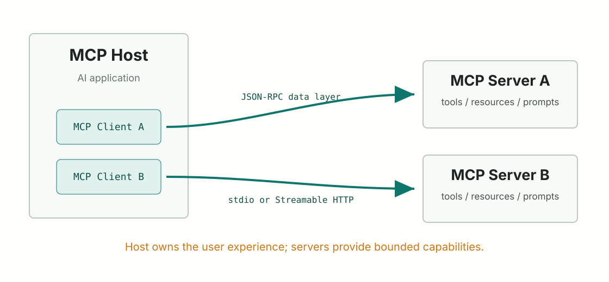

MCP Fundamentals
MCP 解决的到底是什么问题
用 host/client/server 和 data/transport 两层模型建立第一张地图。
先别把 MCP 想成“工具调用框架”
如果只说“MCP 让模型调用工具”，很容易学歪。工具只是其中一种能力。
更准确的说法是：MCP 是一个开放标准，用来让 AI 应用连接外部系统。官方介绍把它描述为连接 AI 应用和外部系统的标准接口，外部系统可以是数据源、工具和工作流；详见 What is MCP?。
这句话里最重要的不是“调用”，而是连接方式标准化。没有 MCP 时，每个 AI 应用都要自己定义如何连接数据库、文件、浏览器、SaaS API、内部系统。MCP 的目标是让这些能力用一套共同协议暴露出来。

三个角色：Host、Client、Server
官方架构文档把 MCP 描述成 client-server architecture：一个 MCP host 会为每个 MCP server 建立一个 MCP client；每个 client 维护到对应 server 的连接，见 Architecture overview。
这三个角色要分清：
- Host：AI 应用本体，比如 IDE、桌面助手、聊天应用。它决定用户看到什么、模型能用什么上下文、工具调用是否要确认。
- Client：host 里管理某个 server 连接的组件。一个 server 通常对应一个 client。
- Server：提供上下文或能力的程序。它可以本地运行，也可以远程运行。
- User asks in Host
- Host routes through MCP Client
- MCP Server exposes context or action
- Host decides what enters the model conversation
这就是为什么学习 MCP 时不要只盯着 server。真正的产品体验通常由 host 决定：权限提示、工具调用 UI、资源选择器、错误恢复、日志展示，都不在 server 一侧单独完成。
两层模型：Data layer 和 Transport layer
官方架构把 MCP 拆成两层：
- Data layer：JSON-RPC 协议语义，定义初始化、能力协商、tools/resources/prompts、notifications 等。
- Transport layer：消息怎么传，比如 stdio 或 Streamable HTTP。
把这两层分开之后，很多困惑会消失。tools/list 是 data layer 的事情；stdio 是 transport layer 的事情。你可以通过 stdio 传 tools/list，也可以通过 HTTP 传同一种 JSON-RPC 消息。
如果一个 MCP server 用 stdio 传输，它暴露 tools/list 的事实属于 data layer 还是 transport layer？
tools/list 属于 data layer。stdio 只是承载 JSON-RPC 消息的 transport layer。
第一张学习地图
你可以先用这张地图记 MCP：
- Host 连接一个或多个 server。
- Host 内部为每个 server 建立 client。
- Client 和 server 先
initialize，协商协议版本和能力。 - Server 暴露 tools、resources、prompts。
- Client 也可能提供 roots、sampling、elicitation 等能力。
- Transport 决定消息走 stdio 还是 Streamable HTTP。
这门课后面会按这张地图展开：先查原语，再练设计，再看传输和安全，最后讨论什么时候 MCP 值得用。